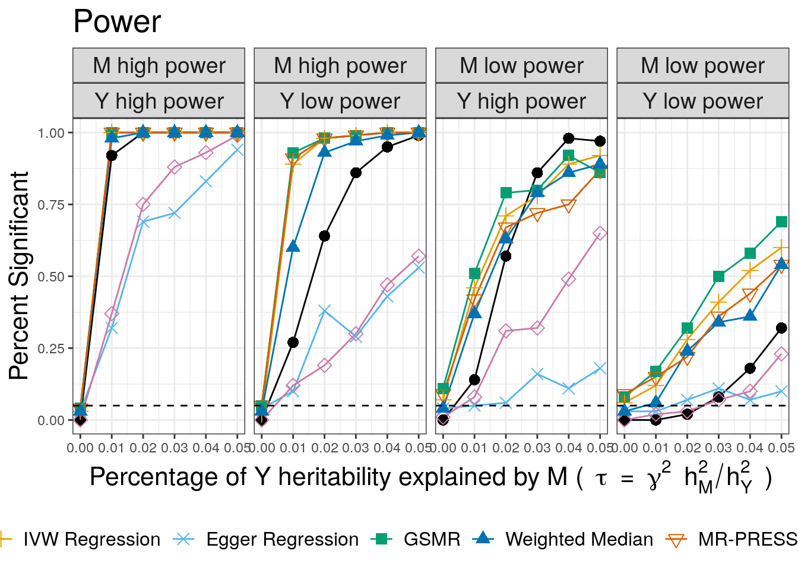
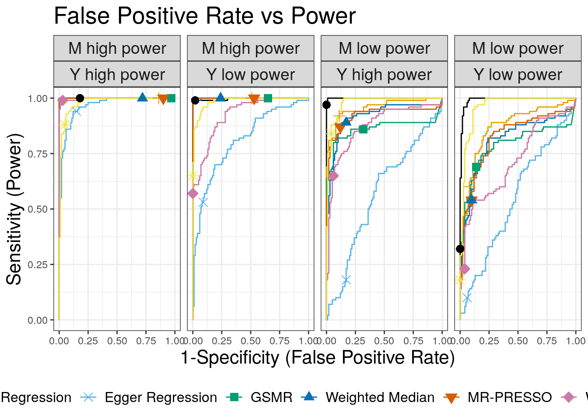

Simulations
Jean Morrison
2019-07-10
Last updated: 2020-07-13
Checks: 7 0
Knit directory: cause/
This reproducible R Markdown analysis was created with workflowr (version 1.6.2). The Checks tab describes the reproducibility checks that were applied when the results were created. The Past versions tab lists the development history.
Great! Since the R Markdown file has been committed to the Git repository, you know the exact version of the code that produced these results.
Great job! The global environment was empty. Objects defined in the global environment can affect the analysis in your R Markdown file in unknown ways. For reproduciblity it’s best to always run the code in an empty environment.
The command set.seed(20181014) was run prior to running the code in the R Markdown file. Setting a seed ensures that any results that rely on randomness, e.g. subsampling or permutations, are reproducible.
Great job! Recording the operating system, R version, and package versions is critical for reproducibility.
Nice! There were no cached chunks for this analysis, so you can be confident that you successfully produced the results during this run.
Great job! Using relative paths to the files within your workflowr project makes it easier to run your code on other machines.
Great! You are using Git for version control. Tracking code development and connecting the code version to the results is critical for reproducibility.
The results in this page were generated with repository version b785efc. See the Past versions tab to see a history of the changes made to the R Markdown and HTML files.
Note that you need to be careful to ensure that all relevant files for the analysis have been committed to Git prior to generating the results (you can use wflow_publish or wflow_git_commit). workflowr only checks the R Markdown file, but you know if there are other scripts or data files that it depends on. Below is the status of the Git repository when the results were generated:
Ignored files:
Ignored: .Rhistory
Ignored: .Rproj.user/
Ignored: sim_results/
Ignored: src/RcppExports.o
Ignored: src/cause.so
Ignored: src/log_likelihood_functions.o
Untracked files:
Untracked: analysis/mrcieu.Rmd
Untracked: cause.Rcheck/
Untracked: gwas_data/
Untracked: ll_v7_notes.Rmd
Untracked: ll_v7_notes.html
Untracked: tests/
Unstaged changes:
Deleted: analysis/figure/simulations.Rmd/plot_fp-1.png
Deleted: analysis/figure/simulations.Rmd/plot_power-1.png
Deleted: analysis/figure/simulations.Rmd/roc_curves-1.png
Note that any generated files, e.g. HTML, png, CSS, etc., are not included in this status report because it is ok for generated content to have uncommitted changes.
These are the previous versions of the repository in which changes were made to the R Markdown (analysis/simulations.Rmd) and HTML (docs/simulations.html) files. If you’ve configured a remote Git repository (see ?wflow_git_remote), click on the hyperlinks in the table below to view the files as they were in that past version.
| File | Version | Author | Date | Message |
|---|---|---|---|---|
| Rmd | b785efc | Jean Morrison | 2020-07-13 | wflow_publish(“analysis/simulations.Rmd”) |
| html | 42dca67 | Jean Morrison | 2019-12-04 | Build site. |
| html | 104aa43 | Jean Morrison | 2019-10-15 | Build site. |
| Rmd | d5d0a47 | Jean Morrison | 2019-10-15 | wflow_publish(c(“analysis/simulations.Rmd”)) |
| Rmd | 12413f7 | Jean Morrison | 2019-07-25 | small typo |
| html | 9de7de6 | Jean Morrison | 2019-07-24 | Build site. |
| Rmd | 112bcde | Jean Morrison | 2019-07-24 | smally typo |
| html | b115414 | Jean Morrison | 2019-07-24 | Build site. |
| Rmd | 6aecf91 | Jean Morrison | 2019-07-24 | change some wording and add extraction code |
| html | 8bbb516 | Jean Morrison | 2019-07-15 | Build site. |
| Rmd | 86ffddd | Jean Morrison | 2019-07-15 | wflow_publish(c(“analysis/index.Rmd”, “analysis/simulations.Rmd”)) |
| html | 1074c61 | Jean Morrison | 2019-07-11 | Build site. |
| Rmd | 7e3c495 | Jean Morrison | 2019-07-10 | more plotting details |
| Rmd | aeeacea | Jean Morrison | 2019-07-10 | lots of plotting details. still working |
| html | d2f0f74 | Jean Morrison | 2019-07-09 | Build site. |
| Rmd | 6c171b2 | Jean Morrison | 2019-07-09 | wflow_publish(“analysis/simulations.Rmd”) |
| html | 165f2c8 | Jean Morrison | 2019-07-09 | Revert “Build site.” |
| html | 2666541 | Jean Morrison | 2019-07-08 | Build site. |
| Rmd | 16285d6 | Jean Morrison | 2019-07-08 | wflow_publish(“analysis/simulations.Rmd”) |
| html | a1b74c5 | Jean Morrison | 2019-07-08 | Build site. |
| Rmd | 31a7da8 | Jean Morrison | 2019-07-08 | wflow_publish(“analysis/simulations.Rmd”) |
| html | 0dd65cc | Jean Morrison | 2019-06-25 | Build site. |
| Rmd | b78e77f | Jean Morrison | 2019-06-25 | wflow_publish(files = c(“analysis/simulations.Rmd”)) |
| html | 286f4e9 | Jean Morrison | 2019-06-25 | Build site. |
| Rmd | 8f3b82e | Jean Morrison | 2019-06-25 | wflow_publish(files = c(“analysis/about.Rmd”, “analysis/index.Rmd”, “analysis/ldl_cad.Rmd”, “analysis/license.Rmd”, |
Click here to look at simulation results interactively
In the document below we describe how to reproduce these using DSC.
Introduction
This page gives instructions for running the simulations that we ran to evaluate CAUSE and will allow you to reproduce the results the paper. It will hopefully also serve as a resource for explaining those results in more detail and allow you to modify simulations to run your own experiments. There are a lot of parameters that can be changed. We tried to explore a reasonable range of scenarios but there are many more variations that could be tried. Running the simulations involves multiple set-up steps, mostly software installation, and may take a bit of time, especially if you are new to DSC. Additionally, completing the simulations requires several hours of computing and needs to be done on a cluster. If you don’t have access to that kind of computing resource you may still find this section useful and all of our results can be downloaded.
Set Up
Software Installation
Simulations are run using the causeSims R package. The package can be installed with
devtools::install_github("jean997/causeSims")This package relies on a few R packages that are not on CRAN, which you will need to install separately. For detailed installation instructions including installation of supporting R packages for other methods see here. There you can also find a walk through of a single simulation and explanations of the functions contained in the package.
We conduct simulations using the Dynamical Statisical Comparisons software. You will need to have DSC installed and it will be helpful to take a look at the tutorial if you haven’t used DSC before.
Set Up The Analysis Directory
To set up the analysis create a working directory that you will run the simulations in. Make sure all the software in the previous section is installed.
From inside this working directory use the R command
library(causeSims)
setup_sims()This function downloads the following files:
LD data: This is used for simulating summary statistics and is placed into a sub-directory
data. The LD data are downloaded from here and contain data for HapMap3 SNPs on chromosome 19 estimated from the CEU 1000 Genomes samples.DSC files: These contain instructions for DSC on how to simulate data and analyze it. Jump to this subsection for a detailed description of the DSC files and simulation parameters. If you want to run your own experiments, these files should provide a good starting place for that. The set up function downloads three DSC files. One is for evaluating false positives in the presence of different levels of correlated pleiotropy, one is for evaluating power when there is a true causal effect, and one is for evaluating the robustness of CAUSE to different prior distributions on \(\gamma\) and \(\eta\) (see supplementary note of the paper).
A configuration file for running DSC on a cluster. This file is set up for the University of Chicago Research Computing Cluster so you will need to change it to match your cluster set up. Even if you are using the U of C cluster, you will need to change the home directory and account lines of this file. Read about using DSC with a compute cluster here (We are using the “On Host” option) and modify
config.ymlas needed.Some code for plotting and results summarization
Data frames of results
Run DSC
Results in the paper are generated by the following DSC files:
Figure 2a: false_positives.dsc Figure 2b: power.dsc Figure 3: reverse.dsc Supplementary Figure SN4: mixture1.dsc
To run DSC use the following commands at the command line
nohup dsc --replicate 100 --host config.yml -c 4 <name>.dsc > <name>.out &where <name> is replaced by one of the four analysis names above.
Depending on your computing resources and how many jobs you allow to run simultaneously, this could take several hours for each command. Errors can occur that stop DSC, usually a result of interfacing with the cluster. For example, DSC may fail to detect that a job has completed. If this happens, simply restart the failed job using the same command. DSC will pick up where it left off since all results are saved along the way. Running these commands will generate lots of *.err and *.out files all of which can be safely deleted. Results will be in directories named fp, pwr, rev and mix1. You can change these names by changing the output: line of the .dsc files.
Look at Results and Plot Them
library(causeSims)
library(dplyr)
library(ggplot2)
library(tidyr)
library(purrr)
library(pROC)Tables of results can be retrieved using the extract_dsc_results function from causeSims. The first argument of this function is a directory name. The function returns a list of data frames. The first gives CAUSE results, the second LCV results, the third results from MR methods run through the MendelianRandomization package. You can toggle extraction of the second two data frames with extract_mr and extract_lcv arguments.
res_fp <- extract_dsc_results("fp")We can then summarize the results into a plottable format using the summarize_dsc_results function. Here we will use the results that are downloaded with the package.
res_fp <- readRDS("sim_results/res_fp.RDS")
summ_fp <- with(res_fp, summarize_dsc_results(cause, lcv, mr))Adding missing grouping variables: `cause.qbeta`head(summ_fp)# A tibble: 6 x 12
cause.qbeta q tau omega n1 n2 neffect1 n_sig missing gamma eta
<int> <dbl> <dbl> <dbl> <dbl> <dbl> <dbl> <int> <int> <dbl> <dbl>
1 2 0.1 0 0.02 12000 12000 1000 0 0 0 0.141
2 10 0.1 0 0.02 12000 12000 1000 0 0 0 0.141
3 100 0.1 0 0.02 12000 12000 1000 0 0 0 0.141
4 2 0.1 0 0.02 12000 40000 1000 0 0 0 0.141
5 10 0.1 0 0.02 12000 40000 1000 0 0 0 0.141
6 100 0.1 0 0.02 12000 40000 1000 0 0 0 0.141
# … with 1 more variable: analysis <chr>res_pwr <- readRDS("sim_results/res_pwr.RDS")
summ_pwr <- with(res_pwr, summarize_dsc_results(cause, lcv, mr))Adding missing grouping variables: `cause.qbeta`head(summ_pwr)# A tibble: 6 x 12
cause.qbeta q tau omega n1 n2 neffect1 n_sig missing gamma eta
<int> <dbl> <dbl> <dbl> <dbl> <dbl> <dbl> <int> <int> <dbl> <dbl>
1 2 0 0 0 12000 12000 1000 0 0 0 0
2 10 0 0 0 12000 12000 1000 0 0 0 0
3 100 0 0 0 12000 12000 1000 0 0 0 0
4 2 0 0 0 12000 40000 1000 0 0 0 0
5 10 0 0 0 12000 40000 1000 0 0 0 0
6 100 0 0 0 12000 40000 1000 0 0 0 0
# … with 1 more variable: analysis <chr>This function groups the data by parameter and computes the number of significant results. The p_thresh and gcp_thresh results control the significance threshold. By default these are \(p < 0.05\) for MR methods and \(\hat{GCP} > 0.6\) for LCV. Now we can plot!
First we plot power with \(\tau\) on the horizontal axis and the number of times each method rejected the null hypothesis on the vertical axis.
wong_colors <- c("#000000", "#E69F00", "#56B4E9", "#009E73", "#0072B2",
"#D55E00", "#CC79A7", "#F0E442")
methods =c("cause_10", "ivw_MR", "egger_MR",
"gsmr", "wm_MR", "mrp", "mbe_MR_1")
p_thresh = 0.05
gcp_thresh = 0.6
shp <- c(16, 3, 4, 15, 17, 25, 23, 8)[1:length(methods)]
ix <- match(methods,c("cause_10", "ivw_MR", "egger_MR",
"gsmr", "wm_MR", "mrp", "mbe_MR_1", "lcv_mean") )
cols <- wong_colors[ix]#plot
pwr <- summ_pwr %>%
filter(q == 0) %>%
filter(analysis %in% methods) %>%
mutate(n1 = as.character(n1),
n1 = recode(n1, "12000" = "M low power",
"40000" = "M high power"),
n2 = as.character(n2),
n2 = recode(n2, "12000" = "Y low power",
"40000" = "Y high power"),
analysis = factor(analysis, levels = methods),
analysis = recode(analysis, cause_10 = "CAUSE",
egger_MR = "Egger Regression",
ivw_MR = "IVW Regression", mbe_MR_1 = "Weighted Mode",
mrp = "MR-PRESSO", wm_MR = "Weighted Median", gsmr = "GSMR")) %>%
ungroup() %>%
ggplot(.) +
geom_line(aes(x=tau, y=n_sig/100, color=analysis)) +
geom_point(aes(x=tau, y=n_sig/100, color=analysis, shape=analysis), size=3) +
scale_color_manual(values=cols) +
scale_shape_manual(values= shp) +
scale_y_continuous(limits=c(0, 1)) +
geom_hline(yintercept=p_thresh, linetype=2) +
xlab(expression("Percentage of Y heritability explained by M (" ~ tau ~ "=" ~ gamma^2 ~ h[M]^2/h[Y]^2 ~ ")")) +
ylab("Percent Significant") +
#theme_bw() +
ggtitle("Power") +
theme_bw() +
theme(legend.title = element_blank(),
strip.text = element_text(size=14),
axis.title = element_text(size=16),
legend.text = element_text(size=12),
plot.title = element_text(size=20),
legend.position = "bottom") +
guides(color=guide_legend(nrow=1),
linetype=guide_legend(nrow=1),
shape=guide_legend(nrow=1) ) +
facet_wrap(~n1*n2, nrow=1)
pwr
CAUSE has lower power than the other methods, except the weighted mode and Egger regression. When the power for trait \(M\) is low and the power for trait \(Y\) is high, CAUSE has better power for large causal effects. This is expected since CAUSE uses a more stringent criterion to conclude that the data are consistent with a causal effect. It is able to achieve better power when \(M\) is under-powered and \(Y\) is well powered because it uses all variants genome-wide rather than only those that are highly significant for trait \(M\). This is an important setting because it may be applicable to scenarios when \(M\) is a biomarker or molecular trait and \(Y\) is a complex triat.
False Positives
Next we plot false positives. Our simulations include two values of \(\eta\) (\(\sqrt{0.05}\) and \(\sqrt{0.02}\)). Although we only had space to present one set of results in the paper, we will make plots for both here. We plot the proportion of \(M\) effect variants that display correlated pleiotropy, \(q\), on the horizontal axis and the number of discoveries on the vertical axis. The bottom row of plots are for the larger value of \(\eta\) and are the ones shown in the paper. For convenience, in extracting results, we copy the results for \(q=0\).
z1 <- filter(summ_fp, omega == 0 & tau == 0 & q == 0) %>% mutate(omega = 0.05)
z2 <- filter(summ_fp, omega == 0 & tau == 0 & q == 0) %>% mutate(omega = 0.02)
summ_fp_copy <- bind_rows(summ_fp, z1, z2) %>%
filter(!(q == 0 & omega == 0 & tau == 0))fp <- summ_fp_copy %>%
filter(tau == 0) %>% # & omega == input$roc_effect) %>%
filter(analysis %in% methods) %>%
mutate(n1 = as.character(n1),
n1 = recode(n1, "12000" = "M low power",
"40000" = "M high power"),
n2 = as.character(n2),
n2 = recode(n2, "12000" = "Y low power",
"40000" = "Y high power"),
omega = recode(omega, `0.02` = "Weak shared factor effect", `0.05` = "Strong shared factor effect"),
omega = factor(omega, levels = c("Weak shared factor effect", "Strong shared factor effect")),
analysis = factor(analysis, levels = methods),
analysis = recode(analysis, cause_10 = "CAUSE", causeeqg_10 = "CAUSE-eqg",
cause_fixedest_10 = "CAUSE-fe", cause_fixedoracle_10 = "CAUSE-fo",
egger_MR = "Egger Regression",
ivw_MR = "IVW Regression", mbe_MR_1 = "Weighted Mode",
mrp = "MR-PRESSO", wm_MR = "Weighted Median", gsmr = "GSMR")) %>%
ggplot(.) +
geom_line(aes(x=q, y=n_sig/100, color=analysis)) +
geom_point(aes(x=q, y=n_sig/100, color=analysis, shape=analysis), size=3) +
geom_hline(yintercept=as.numeric(p_thresh), linetype=2) +
scale_color_manual(values=cols) +
scale_shape_manual(values= shp) +
scale_y_continuous(limits=c(0, 1)) +
geom_hline(yintercept=0.05, linetype=2) +
xlab("Proportion of variants acting through U (q)") +
ylab("Percent Significant") +
ggtitle("False Positive Rate") +
theme_bw() +
theme(legend.title = element_blank(),
strip.text = element_text(size=14),
axis.title = element_text(size=16),
legend.text = element_text(size=12),
plot.title = element_text(size=20),
legend.position = "bottom") +
guides(color=guide_legend(nrow=1),
linetype=guide_legend(nrow=1),
shape=guide_legend(nrow=1) ) +
facet_wrap(~omega*n1*n2, nrow=2)
fp
| Version | Author | Date |
|---|---|---|
| b115414 | Jean Morrison | 2019-07-24 |
In all cases CAUSE has a lower false positive rate than alternative methods except the weighted mode and Egger regression. The false positive rate increases for large values of \(q\) and is worse when the effect of the shared factor is stronger.
ROC Curves
We use ROC curves to evaluate how well each method is able to distinguish simulations with a causal effect of size \(\gamma = \sqrt{0.05}\) from simulations with a shared factor with an equal effect acconting for 30% of the trait \(M\) vairants. Both of these parameters can be modified. Processing hte data to create the ROC curves is a bit complicated. We also add in LCV for these compairsons.
q = 0.3 #Can modify to 0, 0.1, 0.2, 0.4 or 0.5 to see alternative results
roc_effect = 0.05 # Also try 0.02
my_q <-q
if(my_q == 0){
eff2 <- 0
}else{
eff2 <- roc_effect
}
methods =c("cause_10", "ivw_MR", "egger_MR",
"gsmr", "wm_MR", "mrp", "mbe_MR_1", "lcv_mean")
shp <- c(16, 3, 4, 15, 17, 25, 23, 8)[1:length(methods)]
ix <- match(methods,c("cause_10", "ivw_MR", "egger_MR",
"gsmr", "wm_MR", "mrp", "mbe_MR_1", "lcv_mean") )
cols <- wong_colors[ix]
res_l <- list(res_fp, res_pwr)
cdf <- purrr::map_df(res_l, function(r){r$cause})
ldf <- purrr::map_df(res_l, function(r){r$lcv})
mdf <- purrr::map_df(res_l, function(r){r$mr})
#Combined data
dat <- roc_data(cdf, ldf, mdf)
head(dat) simulate.output.file q omega tau n1 n2 analysis stat
1 simulate/simulate_1 0.1 0.02 0 12000 12000 cause_10 7.459915e-01
2 simulate/simulate_1 0.1 0.02 0 12000 12000 cause_100 7.730339e-01
3 simulate/simulate_1 0.1 0.02 0 12000 12000 cause_2 6.097030e-01
4 simulate/simulate_2 0.2 0.02 0 12000 12000 cause_10 6.529461e-13
5 simulate/simulate_2 0.2 0.02 0 12000 12000 cause_100 0.000000e+00
6 simulate/simulate_2 0.2 0.02 0 12000 12000 cause_2 0.000000e+00#Combined summary for adding dots to graph
res <- summarize_dsc_results(cdf, ldf, mdf,
p_thresh=p_thresh, gcp_mean_thresh=gcp_thresh)Adding missing grouping variables: `cause.qbeta`pw <- filter(res, tau == roc_effect ) %>% ungroup()
f <- filter(res, omega == eff2 & q == my_q & tau ==0) %>% ungroup()
df <- select(pw, analysis, n_sig, n1, n2) %>%
rename(power = n_sig) %>%
full_join(., f, c("analysis", "n1", "n2")) %>%
rename(fp = n_sig) %>%
select(analysis, power, fp, n1, n2) %>%
filter(analysis %in% methods) %>%
rename(method=analysis) %>%
mutate(n1 = as.character(n1),
n1 = recode(n1, "12000" = "M low power",
"40000" = "M high power"),
n2 = as.character(n2),
n2 = recode(n2, "12000" = "Y low power",
"40000" = "Y high power"),
method = factor(method, levels = methods),
method = recode(method, cause_10 = "CAUSE", egger_MR = "Egger Regression",
ivw_MR = "IVW Regression", mbe_MR_1 = "Weighted Mode",
mrp = "MR-PRESSO", wm_MR = "Weighted Median", gsmr = "GSMR",
lcv_mean = "LCV GCP"))
n1s <- c(12000, 12000, 40000, 40000)
n2s <- c(12000, 40000, 12000, 40000)
#Data frame of points along ROC curves
roc_df <-map_dfr(seq_along(n1s), function(i){
my_n1 <- n1s[i]
my_n2 <- n2s[i]
rocs <- map_dfr(methods, function(m){
cat(m, " ")
xx <- filter(dat, n1 == my_n1 & n2 == my_n2 & analysis == m &
( tau == roc_effect | (omega == eff2 & q == my_q & tau == 0)))
xx$stat[is.na(xx$stat)] <- 0
with(xx, roc(predictor = stat, response = tau !=0,
levels=c(FALSE, TRUE), direction="<")) %>%
with(., data.frame(thresh = thresholds, spec = specificities,
sens = sensitivities, method = m,
n1 = my_n1, n2 = my_n2, auc=rep(auc, length(thresholds)),
stringsAsFactors=F)) %>% return()
})
})%>%
mutate(n1 = recode(n1, `12000` = "M low power",
`40000` = "M high power"),
n2 = recode(n2, `12000` = "Y low power",
`40000` = "Y high power"),
n1 = factor(n1, levels=c("M low power", "M high power")),
n2 = factor(n2, levels=c("Y low power", "Y high power")))cause_10 ivw_MR egger_MR gsmr wm_MR mrp mbe_MR_1 lcv_mean cause_10 ivw_MR egger_MR gsmr wm_MR mrp mbe_MR_1 lcv_mean cause_10 ivw_MR egger_MR gsmr wm_MR mrp mbe_MR_1 lcv_mean cause_10 ivw_MR egger_MR gsmr wm_MR mrp mbe_MR_1 lcv_mean #Plot!
plt <- roc_df %>% arrange(sens) %>%
mutate(
method = factor(method, levels = methods),
method = recode(method, cause_10 = "CAUSE", egger_MR = "Egger Regression",
ivw_MR = "IVW Regression", mbe_MR_1 = "Weighted Mode",
mrp = "MR-PRESSO", wm_MR = "Weighted Median", gsmr = "GSMR",
lcv_mean = "LCV GCP")) %>%
ggplot(.) +
geom_line(aes(x=1-spec, y=sens, col=method, group=method)) +
geom_point(aes(x=fp/100, y = power/100, col=method, shape=method, fill = method), size =3 , data=df) +
scale_color_manual(values=cols) +
scale_fill_manual(values=cols) +
scale_shape_manual(values = shp) +
xlab("1-Specificity (False Positive Rate)") + ylab("Sensitivity (Power)") +
ggtitle("False Positive Rate vs Power") +
theme_bw() +
theme(legend.title = element_blank(),
strip.text = element_text(size=14),
axis.title = element_text(size=16),
plot.title = element_text(size=20),
legend.text = element_text(size=12),
legend.position = "bottom") +
guides(color=guide_legend(nrow=1),
linetype=guide_legend(nrow=1),
shape=guide_legend(nrow=1)
) +
facet_wrap(~n1*n2, ncol=4)
plt
auc_tab <- filter(roc_df, thresh==-Inf) %>%
select(-thresh, -spec, -sens) %>%
mutate(q=q)
auc_tab <- auc_tab %>%
mutate(method = recode(method, cause_10 = "CAUSE", egger_MR = "Egger Regression",
ivw_MR = "IVW Regression", mbe_MR_1 = "Weighted Mode",
mrp = "MR-PRESSO", wm_MR = "Weighted Median", gsmr = "GSMR",
lcv_mean = "LCV GCP"),
class = case_when(n1=="M low power" & n2=="Y low power" ~ "LL",
n1=="M low power" & n2=="Y high power" ~ "LH",
n1=="M high power" & n2=="Y low power" ~ "HL",
n1=="M high power" & n2=="Y high power" ~ "HH"
)) %>%
select(-n1, -n2, -q) %>%
spread(class, auc) %>%
mutate(q = q)
auc_tab method HH HL LH LL q
1 CAUSE 1.0000 0.9970 0.9998 0.9925 0.3
2 Egger Regression 0.9653 0.8094 0.5674 0.5470 0.3
3 GSMR 1.0000 1.0000 0.8628 0.7849 0.3
4 IVW Regression 1.0000 1.0000 0.9579 0.8636 0.3
5 LCV GCP 0.9795 0.9862 0.9777 0.9601 0.3
6 MR-PRESSO 1.0000 1.0000 0.9216 0.8240 0.3
7 Weighted Median 1.0000 0.9993 0.9174 0.8121 0.3
8 Weighted Mode 0.9976 0.9259 0.8731 0.7167 0.3Reverse direction effects
These results show the performance of each method when the data are simulated from the model \(Y \rightarrow M\) but we test for an effect of \(M\) on \(Y\).
res_rev <- readRDS("sim_results/res_rev.RDS")
summ_rev <- with(res_rev, summarize_dsc_results(cause, lcv, mr))Adding missing grouping variables: `cause.qbeta`methods =c("cause_10", "ivw_MR", "egger_MR",
"wm_MR", "mrp", "mbe_MR_1")
shp <- c(16, 3, 4, 15, 17, 25, 23, 8)[1:length(methods)]
ix <- match(methods,c("cause_10", "ivw_MR", "egger_MR",
"gsmr", "wm_MR", "mrp", "mbe_MR_1", "lcv_mean") )
cols <- wong_colors[ix]
rev <- summ_rev %>%
filter(analysis %in% methods) %>%
mutate(analysis = factor(analysis, levels = c("cause_10", "ivw_MR", "egger_MR",
"mbe_MR_1", "wm_MR", "mrp")),
analysis = recode(analysis, cause_10 = "CAUSE", egger_MR = "Egger Regression",
ivw_MR = "IVW Regression", mbe_MR_1 = "Weighted Mode",
mrp = "MR-PRESSO", wm_MR = "Weighted Median")) %>%
ungroup() %>%
ggplot(.) +
geom_line(aes(x=neffect1, y=n_sig/100, color=analysis)) +
geom_point(aes(x=neffect1, y=n_sig/100, color=analysis, shape=analysis), size=3) +
scale_color_manual(values=cols) +
scale_shape_manual(values= shp) +
scale_y_continuous(limits=c(0, 1)) +
scale_x_continuous(breaks=c(250, 500, 1000)) +
geom_hline(yintercept=as.numeric(p_thresh), linetype=2) +
xlab(expression("Number of M effect variants independent of Y")) +
ylab("Percent Significant") +
theme_bw() +
ggtitle("Robustness to Reverse Effects") +
theme(legend.title = element_blank(),
strip.text = element_text(size=14),
axis.title = element_text(size=16),
legend.text = element_text(size=12),
legend.position = "bottom",
plot.title = element_text(size=20)) +
guides(color=guide_legend(nrow=2),
linetype=guide_legend(nrow=2),
shape=guide_legend(nrow=2) )
rev
What’s in the DSC Files?
We will now go in detail through one of the DSC files so you can see what is happening and how to make changes to run your own experiments. The DSC files are all identical except for the first few module. reverse.dsc has an extra module that reverses the data (switching traits \(M\) and \(Y\)).
The DSC statement is at the top:
DSC:
define:
mr: ivw_MR, egger_MR, wm_MR, mbe_MR, mrp, gsmr
run: simulate*data_summ,
simulate*LCV,
simulate*mr,
simulate*cause_params*cause
replicate: 100
output: fpThis statement tells DSC what to run. In define we define a group of modules. These will turn up later in the file. In run we tell DSC what to run. For example, simulate*gw_sig means that DSC should run the simulate module followed by the gw_sig module which will use the results of the simulate module. replicate indicates the number of replicates to run (though this is over-ridden by the --replicate flag in the DSC call above) and output names the output directory.
The rest of the document defines modules. All of our modules use R code and most of them rely on the causeSims R package.
Simulation Modules
The simulation module:
simulate: R(library(causeSims);
snps <- readRDS("data/chr19_snpdata_hm3only.RDS");
evd_list <- readRDS("data/evd_list_chr19_hm3.RDS");
dat <- sum_stats(snps, evd_list,
n_copies = 30,
n1 = n1, n2=n2,
h1=h1, h2=h1,
neffect1 = neffect1, neffect2 = neffect2,
tau = tau, omega = omega, q = q,
cores = 4, ld_prune_pval_thresh = 0.01,
r2_thresh = 0.1))
q: 0.1, 0.2, 0.3, 0.4, 0.5
omega: 0.02, 0.05
tau: 0
n1: 12000, 40000
n2: 12000, 40000
neffect1: 1000
neffect2: 1000
h1: 0.25
h2: 0.25
$sim_params: c(q = q, omega = omega, tau = tau, h1 = h1, h2 = h2, n1 = n1, n2 = n2, neffect1 = neffect1, neffect2 =neffect2)
$dat: datThe R code contained in R() is the guts of this module. A data object named dat is generated using the sum_stats function from the causeSims R pacakge. Below this, we specify parameters used to simulate the data. Most important are q, omega, and tau. q is the proportion of variants acting through \(U\) while omega and tau are standardized versions of \(\gamma\) and \(\eta\) in the paper. tau is the proportion of \(Y\) heritability explained by the causal effect of \(M\) on \(Y\) times the sign of \(\gamma\), \[
\tau = sign(\gamma)\frac{\gamma^2 h^2_{M}}{h^{2}_{Y}},
\] and omega is the proportion of \(Y\) heritability explained by \(U\), divided by \(q\) and multiplied by the sign of \(\eta\). \[
\omega = sign(\eta)\frac{\eta^2 h^2_{M}}{h^{2}_{Y}}
\] This parameterization is sometimes more convenient for running simulations that using \(\eta\) and \(\gamma\). However, the sum_stats function will accept either omega and tau arguments or eta and gamma. Note that here we have specified that the function can use 4 cores. This should match the n_cpu parameter in the simulate section of the config file. The sum_stats function generates data both with and without LD. In this file we only analyze the “with LD” data but we will describe how to make modifications to analyze both or only the “no LD” data.
The data_summ module is a helper module. This module computes the GCP (a parameter defined by LCV (O’Connor and Price 2019)) and computes the number of genome-wide significant variants. It also stores all the simulation parameters which makes it easier to extract them. Extracting parameters from the simulate module will require reading in the entire data set, objects created by the data_summ module are smaller and faster to read.
data_summ: R(library(causeSims);
m_sig_nold <- with($(dat), sum(p_value_nold < thresh ));
y_sig_nold <- with($(dat), sum(2*pnorm(-abs(beta_hat_2_nold/seb2)) < thresh ));
m_sig <- with($(dat), sum(p_value < thresh & ld_prune==TRUE));
params <- $(sim_params);
tau <- as.numeric(params["tau"]);
omega <- as.numeric(params["omega"]);
q <- as.numeric(params["q"]);
h1 <- as.numeric(params["h1"]);
h2 <- as.numeric(params["h2"]);
neffect1 <- as.numeric(params["neffect1"]);
neffect2 <- as.numeric(params["neffect2"]);
gamma <- sqrt(tau*sum(h2)/sum(h1))*sign(tau);
eta <- sqrt(abs(omega)*sum(h2)/sum(h1))*sign(omega);
#LCV parameters
if(q == 0 & tau == 0){
q.1 <- q.2 <- 0;
gcp <- 0;
}else if(q == 0){
q.1 <- 1;
q.2 <- 0;
gcp <- 1;
}else{
q.1 <- sqrt(q);
q.2 <- eta * sqrt(q) * sqrt(h1) / sqrt(h2);
gcp = (log(q.2^2) - log(q.1^2)) / (log(q.2^2) + log(q.1^2));
};
)
thresh: 5e-8
$m_sig: m_sig
$m_sig_nold: m_sig_nold
$y_sig_nold: y_sig_nold
$q: q
$omega: omega
$tau: tau
$gamma: gamma
$eta: eta
$h1: h1
$h2: h2
$n1: as.numeric(params["n1"])
$n2: as.numeric(params["n2"])
$neffect1: as.numeric(params["neffect1"])
$neffect2: as.numeric(params["neffect2"])
$lcv_q1: q.1
$lcv_q2: q.2
$lcv_gcp: gcpCAUSE Modules
We have divided CAUSE analysis into parameter estimation and model fitting steps. This makes it easier to experiment with changes only to the parameter estimation step.
cause_params: R(library(causeSims);
p <- cause_params_sims($(dat), null_wt = null_wt, no_ld=FALSE);
)
null_wt: 10
$cause_params_ld: p
cause: R(library(causeSims);
library(cause);
cause_res <- cause_sims($(dat), $(cause_params_ld), no_ld = FALSE,
qalpha = 1, qbeta = qbeta);
z <- -1*summary(cause_res)$z;
p <- pnorm(-z);
qs <- summary(cause_res)$quants)
qbeta: 10, 100, 2
$cause_res: cause_res
$sigma_g: cause_res$sigma_g
$z: z
$p: p
$eta_2_upper: qs[[1]][3,2]
$q_2_upper: qs[[1]][3,3]
$eta_2_lower: qs[[1]][2,2]
$q_2_lower: qs[[1]][2,3]
$eta_2_med: qs[[1]][1,2]
$q_2_med: qs[[1]][1,3]
$eta_3_upper: qs[[2]][3,2]
$q_3_upper: qs[[2]][3,3]
$gamma_3_upper: qs[[2]][3,1]
$eta_3_lower: qs[[2]][2,2]
$q_3_lower: qs[[2]][2,3]
$gamma_3_lower: qs[[2]][2,1]
$eta_3_med: qs[[2]][1,2]
$q_3_med: qs[[2]][1,3]
$gamma_3_med: qs[[2]][1,1]Both modules use wrapper functions from the causeSims package. These are very simple wrappers that make it easy to run CAUSE on the simulated data format. Note that here we use no_ld = FALSE in both modules. If you want to use the data that is simulated without LD instead you can change no_ld = TRUE.
Alternative MR Modules
There are several modules for alternative MR methods. Modules for IVW regression, Egger regression, MR-PRESSO, and the weighted median method are very similar and rely on wrappers from causeSims. We can just look at one of these.
ivw_MR: R(library(causeSims);
res <- ivw_re_nonome_MR($(dat), p_val_thresh=thresh, no_ld = no_ld);
)
thresh: 5e-8
no_ld: FALSE
$est: res$est
$z: res$z
$p: res$pTo run on the data without LD change the no_ld parameter to no_ld: TRUE or no_ld: TRUE, FALSE to run both.
The GSMR module is a little more complicated
gsmr: R(library(causeSims);
evd_list <- readRDS("data/evd_list_chr19_hm3.RDS");
res <- gsmr_sims($(dat), evd_list, p_val_thresh = 5e-8, no_ld = FALSE);
if(!is.null(res)){
z <- res$bxy/res$bxy_se;
est <- res$bxy;
p <- res$bxy_pval;
}else{
z <- est <- p <- NA;
}
)
thresh: 5e-8
$z: z
$p: p
$est: est
$gsmr: resGSMR requires the LD structure and sometimes returns errors. In this case the gsmr_sims wrapper returns NULL and we set results to missing. If no_ld = TRUE the LD data in evd_list is simply ignored.
LCV Module
Results from LCV are not compared with CAUSE in the paper because LCV is performing a different test than other MR methods. However, we have implemented wrappers and a module to run LCV.
LCV: R(library(causeSims);
res <- try(lcv_sims($(dat),no_ld = no_ld, sig.thresh = thresh));
if(class(res) == "try-error"){
res <- list(pval.gcpzero.2tailed=NA, gcp.pm = NA, gcp.pse = NA);
};
)
thresh: 30
no_ld: FALSE
$p: res$pval.gcpzero.2tailed
$gcp_mean: res$gcp.pm
$gcp_pse: res$gcp.pse
$gcp_obj: resWhen LCV returns errors, we set results to missing.
sessionInfo()R version 4.0.2 (2020-06-22)
Platform: x86_64-pc-linux-gnu (64-bit)
Running under: Ubuntu 18.04.4 LTS
Matrix products: default
BLAS: /usr/lib/x86_64-linux-gnu/openblas/libblas.so.3
LAPACK: /usr/lib/x86_64-linux-gnu/libopenblasp-r0.2.20.so
locale:
[1] LC_CTYPE=en_US.UTF-8 LC_NUMERIC=C
[3] LC_TIME=en_US.UTF-8 LC_COLLATE=en_US.UTF-8
[5] LC_MONETARY=en_US.UTF-8 LC_MESSAGES=en_US.UTF-8
[7] LC_PAPER=en_US.UTF-8 LC_NAME=C
[9] LC_ADDRESS=C LC_TELEPHONE=C
[11] LC_MEASUREMENT=en_US.UTF-8 LC_IDENTIFICATION=C
attached base packages:
[1] stats graphics grDevices utils datasets methods base
other attached packages:
[1] pROC_1.16.2 purrr_0.3.4 tidyr_1.1.0 ggplot2_3.3.2
[5] dplyr_1.0.0 causeSims_0.1.0 workflowr_1.6.2
loaded via a namespace (and not attached):
[1] httr_1.4.1 jsonlite_1.7.0
[3] viridisLite_0.3.0 RcppParallel_5.0.2
[5] assertthat_0.2.1 mixsqp_0.3-43
[7] arrangements_1.1.8 yaml_2.2.1
[9] robustbase_0.93-6 globals_0.12.5
[11] numDeriv_2016.8-1.1 pillar_1.4.4
[13] backports_1.1.8 lattice_0.20-41
[15] glue_1.4.1 digest_0.6.25
[17] promises_1.1.1 iterpc_0.4.2
[19] colorspace_1.4-1 MRPRESSO_1.0
[21] plyr_1.8.6 htmltools_0.5.0
[23] httpuv_1.5.4 Matrix_1.2-18
[25] pkgconfig_2.0.3 invgamma_1.1
[27] listenv_0.8.0 scales_1.1.1
[29] intervals_0.15.2 cause_1.0.0.0267
[31] whisker_0.4 later_1.1.0.1
[33] git2r_0.27.1 tibble_3.0.2
[35] MendelianRandomization_0.4.2 gmp_0.6-0
[37] farver_2.0.3 generics_0.0.2
[39] ellipsis_0.3.1 withr_2.2.0
[41] furrr_0.1.0 ashr_2.2-47
[43] lazyeval_0.2.2 cli_2.0.2
[45] magrittr_1.5 crayon_1.3.4
[47] evaluate_0.14 fansi_0.4.1
[49] fs_1.4.2 future_1.18.0
[51] truncnorm_1.0-8 RcppZiggurat_0.1.5
[53] tools_4.0.2 loo_2.3.0
[55] data.table_1.12.8 hms_0.5.3
[57] lifecycle_0.2.0 matrixStats_0.56.0
[59] stringr_1.4.0 plotly_4.9.2.1
[61] munsell_0.5.0 irlba_2.3.3
[63] compiler_4.0.2 rlang_0.4.6
[65] grid_4.0.2 rstudioapi_0.11
[67] rjson_0.2.20 htmlwidgets_1.5.1
[69] labeling_0.3 rmarkdown_2.3
[71] gtable_0.3.0 codetools_0.2-16
[73] R6_2.4.1 gridExtra_2.3
[75] knitr_1.29 utf8_1.1.4
[77] rprojroot_1.3-2 readr_1.3.1
[79] stringi_1.4.6 parallel_4.0.2
[81] SQUAREM_2020.3 Rcpp_1.0.5
[83] vctrs_0.3.1 DEoptimR_1.0-8
[85] tidyselect_1.1.0 xfun_0.15